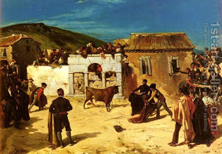

Bava Kamma 24 - From Warned Back To Innocent

An innocent ox becomes "warned" for damages and its owner becomes liable for complete payment after three gorings, which must happen on three different days, according to Rabbi Yehudah, or even on one day, according to Rabbi Meir.
The source : "...from (1) yesterday (2) and before yesterday (3)..."
It reverts to "innocent" if it is confronted by circumstances that triggered goring the first three times yet now desists from this behavior on three separate days. Rabbi Meir adds that it reverts to "innocent" any time that the children poke it between the horns and it does not gore.